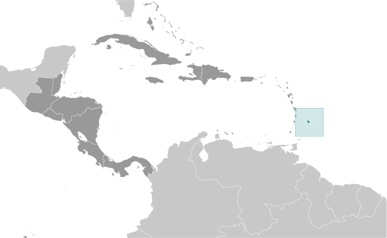
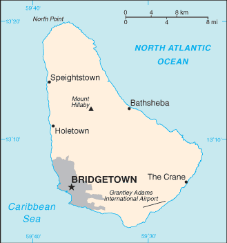
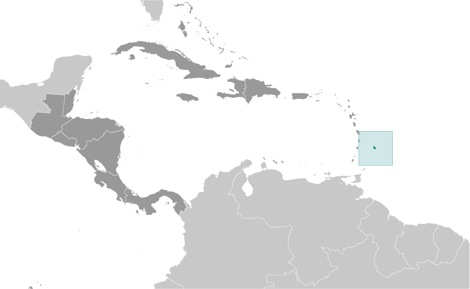
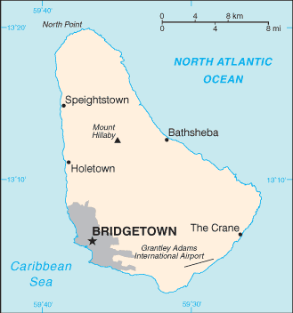

Central America and Caribbean :: BARBADOS
Introduction :: BARBADOS
-
The island was uninhabited when first settled by the British in 1627. African slaves worked the sugar plantations established on the island until 1834 when slavery was abolished. The economy remained heavily dependent on sugar, rum, and molasses production through most of the 20th century. The gradual introduction of social and political reforms in the 1940s and 1950s led to complete independence from the UK in 1966. In the 1990s, tourism and manufacturing surpassed the sugar industry in economic importance.
Geography :: BARBADOS
-
Caribbean, island in the North Atlantic Ocean, northeast of Venezuela13 10 N, 59 32 WCentral America and the Caribbeantotal: 430 sq kmland: 430 sq kmwater: 0 sq kmcountry comparison to the world: 2022.5 times the size of Washington, DC0 km97 kmterritorial sea: 12 nmexclusive economic zone: 200 nmtropical; rainy season (June to October)relatively flat; rises gently to central highland regionmean elevation: NAelevation extremes: lowest point: Atlantic Ocean 0 mhighest point: Mount Hillaby 336 mpetroleum, fish, natural gasagricultural land: 32.6%arable land 25.6%; permanent crops 2.3%; permanent pasture 4.7%forest: 19.4%other: 48% (2011 est.)50 sq km (2012)most densely populated country in the eastern Caribbean; approximately one-third live in urban areasinfrequent hurricanes; periodic landslidespollution of coastal waters from waste disposal by ships; soil erosion; illegal solid waste disposal threatens contamination of aquifersparty to: Biodiversity, Climate Change, Climate Change-Kyoto Protocol, Desertification, Endangered Species, Hazardous Wastes, Law of the Sea, Marine Dumping, Ozone Layer Protection, Ship Pollution, Wetlandssigned, but not ratified: none of the selected agreementseasternmost Caribbean island
People and Society :: BARBADOS
-
292,336 (July 2017 est.)country comparison to the world: 180noun: Barbadian(s) or Bajan (colloquial)adjective: Barbadian or Bajan (colloquial)black 92.4%, white 2.7%, mixed 3.1%, East Indian 1.3%, other 0.2%, unspecified 0.2% (2010 est.)English (official), Bajan (English-based creole language, widely spoken in informal settings)Protestant 66.4% (includes Anglican 23.9%, other Pentecostal 19.5%, Adventist 5.9%, Methodist 4.2%, Wesleyan 3.4%, Nazarene 3.2%, Church of God 2.4%, Baptist 1.8%, Moravian 1.2%, other Protestant 0.9%), Roman Catholic 3.8%, other Christian 5.4% (includes Jehovah's Witness 2.0%, other 3.4%), Rastafarian 1%, other 1.5%, none 20.6%, unspecified 1.2% (2010 est.)0-14 years: 17.97% (male 26,256/female 26,266)15-24 years: 12.74% (male 18,504/female 18,732)25-54 years: 44.06% (male 64,198/female 64,594)55-64 years: 13.43% (male 18,497/female 20,770)65 years and over: 11.81% (male 13,927/female 20,592) (2017 est.)total dependency ratio: 50.4youth dependency ratio: 29.1elderly dependency ratio: 21.3potential support ratio: 4.7 (2015 est.)total: 38.6 yearsmale: 37.5 yearsfemale: 39.8 years (2017 est.)country comparison to the world: 600.28% (2017 est.)country comparison to the world: 17811.7 births/1,000 population (2017 est.)country comparison to the world: 1698.6 deaths/1,000 population (2017 est.)country comparison to the world: 77-0.3 migrant(s)/1,000 population (2017 est.)country comparison to the world: 114most densely populated country in the eastern Caribbean; approximately one-third live in urban areasurban population: 31.4% of total population (2017)rate of urbanization: 0.4% annual rate of change (2015-20 est.)BRIDGETOWN (capital) 90,000 (2014)at birth: 1.01 male(s)/female0-14 years: 1 male(s)/female15-24 years: 0.99 male(s)/female25-54 years: 0.99 male(s)/female55-64 years: 0.88 male(s)/female65 years and over: 0.66 male(s)/femaletotal population: 0.94 male(s)/female (2016 est.)27 deaths/100,000 live births (2015 est.)country comparison to the world: 117total: 10.2 deaths/1,000 live birthsmale: 11.7 deaths/1,000 live birthsfemale: 8.8 deaths/1,000 live births (2017 est.)country comparison to the world: 134total population: 75.5 yearsmale: 73.2 yearsfemale: 77.9 years (2017 est.)country comparison to the world: 1061.68 children born/woman (2017 est.)country comparison to the world: 17559.2% (2012)7.5% of GDP (2014)country comparison to the world: 646.2 beds/1,000 population (2012)improved:urban: 99.7% of populationrural: 99.7% of populationtotal: 99.7% of populationunimproved:urban: 0.3% of populationrural: 0.3% of populationtotal: 0.3% of population (2015 est.)improved:urban: 96.2% of populationrural: 96.2% of populationtotal: 96.2% of populationunimproved:urban: 3.8% of populationrural: 3.8% of populationtotal: 3.8% of population (2015 est.)1.3% (2016 est.)country comparison to the world: 362,600 (2016 est.)country comparison to the world: 116<100 (2016 est.)note: active local transmission of Zika virus by Aedes species mosquitoes has been identified in this country (as of August 2016); it poses an important risk (a large number of cases possible) among US citizens if bitten by an infective mosquito; other less common ways to get Zika are through sex, via blood transfusion, or during pregnancy, in which the pregnant woman passes Zika virus to her fetus (2016)23.1% (2016)country comparison to the world: 683.5% (2012)6.7% of GDP (2014)country comparison to the world: 54total: 15 yearsmale: 14 yearsfemale: 17 years (2011)total: 32.4%male: 31.8%female: 33.3% (2015 est.)
Government :: BARBADOS
-
conventional long form: noneconventional short form: Barbadosetymology: the name derives from the Portuguese "as barbadas," which means "the bearded ones" and can refer either to the long, hanging roots of the island's bearded fig trees or to the alleged beards of the native Carib inhabitantsparliamentary democracy (Parliament) under a constitutional monarchy; a Commonwealth realmname: Bridgetowngeographic coordinates: 13 06 N, 59 37 Wtime difference: UTC-4 (1 hour ahead of Washington, DC, during Standard Time)11 parishes and 1 city*; Bridgetown*, Christ Church, Saint Andrew, Saint George, Saint James, Saint John, Saint Joseph, Saint Lucy, Saint Michael, Saint Peter, Saint Philip, Saint Thomas30 November 1966 (from the UK)Independence Day, 30 November (1966)adopted 22 November 1966, effective 30 November 1966; amended several times, last in 2007 (2016)English common law; no judicial review of legislative actsaccepts compulsory ICJ jurisdiction with reservations; accepts ICCt jurisdictioncitizenship by birth: yescitizenship by descent: yesdual citizenship recognized: yesresidency requirement for naturalization: 5 years18 years of age; universalchief of state: Queen ELIZABETH II (since 6 February 1952); represented by Governor General (Acting) Sir Philip GREAVES (since 1 July 2017)head of government: Prime Minister Freundel STUART (since 23 October 2010)cabinet: Cabinet appointed by the governor general on the advice of the prime ministerelections/appointments: the monarchy is hereditary; governor general appointed by the monarch; following legislative elections, the leader of the majority party or leader of the majority coalition usually appointed prime minister by the governor general; the prime minister recommends the deputy prime ministerdescription: bicameral Parliament consists of the Senate (21 seats; members appointed by the governor general - 12 on the advice of the Prime Minister, 2 on the advice of the opposition leader, and 7 at the discretion of the governor general) and the House of Assembly (30 seats; members directly elected in single-seat constituencies by simple majority vote to serve 5-year terms)elections: House of Assembly - last held on 21 February 2013 (next to be held in 2018)election results: House of Assembly - percent of vote by party - DLP 51.3%, BLP 48.3%, other 0.4%; seats by party - DLP 16, BLP 14highest court(s): Supreme Court (consists of the High Court with 8 justices) and the Court of Appeal (consists of the High Court chief justice and president of the court and 4 justices; note - in 2010, Barbados, a member of the Caribbean Court of Justice, replaced the Judicial Committee of the Privy Council in London as the final court of appealjudge selection and term of office: Supreme Court chief justice appointed by the governor-general on the recommendation of the prime minister and opposition leader of Parliament; other justices appointed by the governor-general on the recommendation of the Judicial and Legal Service Commission, a 5-member independent body consisting of the Supreme Court chief justice, the commission head, and governor-general appointees recommended by the prime minister; justices serve until mandatory retirement at age 65subordinate courts: Magistrates' CourtsBarbados Labor Party or BLP [Mia MOTTLEY]Democratic Labor Party or DLP [Freundel STUART]People's Empowerment Party or PEP [David COMISSIONG]Barbados Secondary Teachers' Union or BSTU [Mary REDMAN]Barbados Union of Teachers or BUT [Pedro SHEPHERD]Barbados Workers Union or BWU [Linda BROOKS]Clement Payne Labor Union [David COMISSIONG]Congress of Trade Unions and Staff Associations of Barbados or CTUSAB, (includes the BWU, NUPW, BUT, and BSTU) [Cedric MURRELL]National Union of Public Workers or NUPW [Akanni MCDOWALL]ACP, AOSIS, C, Caricom, CDB, CELAC, FAO, G-77, IADB, IBRD, ICAO, ICCt, ICRM, IDA, IFAD, IFC, IFRCS, ILO, IMF, IMO, Interpol, IOC, ISO, ITSO, ITU, ITUC (NGOs), LAES, MIGA, NAM, OAS, OPANAL, OPCW, UN, UNCTAD, UNESCO, UNHCR, UNIDO, UPU, WCO, WFTU (NGOs), WHO, WIPO, WMO, WTOchief of mission: Ambassador Selwin Charles HART (since 18 January 2017)chancery: 2144 Wyoming Avenue NW, Washington, DC 20008telephone: [1] (202) 939-9200FAX: [1] (202) 332-7467consulate(s) general: Miami, New Yorkconsulate(s): Los Angeleschief of mission: Ambassador Linda S. TAGLIALATELA (since 1 February 2016) note - also accredited to Antigua and Barbuda, Dominica, Grenada, Saint Kitts and Nevis, Saint Lucia, and Saint Vincent and the Grenadinesembassy: Wildey Business Park, Wildey, St. Michael BB 14006, Barbadosmailing address: P. O. Box 302, Bridgetown BB 11000; (Department Name) Unit 3120, DPO AA 34055telephone: [1] (246) 227-4000FAX: [1] (246) 431-0179three equal vertical bands of ultramarine blue (hoist side), gold, and ultramarine blue with the head of a black trident centered on the gold band; the band colors represent the blue of the sea and sky and the gold of the beaches; the trident head represents independence and a break with the past (the colonial coat of arms contained a complete trident)Neptune's trident, pelican, Red Bird of Paradise flower (also known as Pride of Barbados); national colors: blue, yellow, blackname: "The National Anthem of Barbados"lyrics/music: Irving BURGIE/C. Van Roland EDWARDSnote: adopted 1966; the anthem is also known as "In Plenty and In Time of Need"
Economy :: BARBADOS
-
Barbados is the wealthiest and one of the most developed countries in the Eastern Caribbean and enjoys one of the highest per capita incomes in the region. Historically, the Barbadian economy was dependent on sugarcane cultivation and related activities. However, in recent years the economy has diversified into light industry and tourism. Offshore finance and information services are important foreign exchange earners, boosted by being in the same time zone as eastern US financial centers and by a relatively highly educated workforce. Following the 2008-09 recession, the economy has grown due to increases in tourist arrivals, construction, financial services and exports. However, Barbados’ high public debt to GDP ratio and falling international reserves remain areas of concern. Growth prospects are limited because of a weak economic outlook.$4.793 billion (2016 est.)$4.658 billion (2015 est.)$4.567 billion (2014 est.)note: data are in 2016 dollarscountry comparison to the world: 176$4.552 billion (2016 est.)1.6% (2016 est.)0.9% (2015 est.)0.1% (2014 est.)country comparison to the world: 151$17,100 (2016 est.)$16,800 (2015 est.)$16,800 (2014 est.)note: data are in 2016 dollarscountry comparison to the world: 978.6% of GDP (2016 est.)8.8% of GDP (2015 est.)3.1% of GDP (2014 est.)country comparison to the world: 158household consumption: 79.8%government consumption: 13.6%investment in fixed capital: 13.8%investment in inventories: 2.6%exports of goods and services: 34.6%imports of goods and services: -44.4% (2016 est.)agriculture: 1.6%industry: 11.3%services: 87.1% (2016 est.)sugarcane, vegetables, cottontourism, sugar, light manufacturing, component assembly for export3% (2016 est.)country comparison to the world: 85142,500 (2016 est.)country comparison to the world: 179agriculture: 10%industry: 15%services: 75% (1996 est.)9.9% (2016 est.)11.3% (2015 est.)country comparison to the world: 129NA%lowest 10%: NA%highest 10%: NA%revenues: $1.326 billion (2013 est.)expenditures: $1.612 billion (2016 est.)28.9% of GDP (2016 est.)country comparison to the world: 87-6.2% of GDP (2016 est.)country comparison to the world: 172107.9% of GDP (2016 est.)105.2% of GDP (2015 est.)country comparison to the world: 141 April - 31 March1.3% (2016 est.)-1.1% (2015 est.)country comparison to the world: 987% (31 December 2010)7% (31 December 2009)country comparison to the world: 518.05% (31 December 2016 est.)8.06% (31 December 2015 est.)country comparison to the world: 104$2.143 billion (31 December 2016 est.)$2.053 billion (31 December 2015 est.)country comparison to the world: 130$4.55 billion (31 December 2016 est.)$4.385 billion (31 December 2015 est.)country comparison to the world: 130$5.798 billion (31 December 2016 est.)$5.468 billion (31 December 2015 est.)country comparison to the world: 121$4.495 billion (31 December 2012 est.)$4.571 billion (31 December 2011 est.)$4.366 billion (31 December 2010 est.)country comparison to the world: 89$-208 million (2016 est.)$-288.7 million (2015 est.)country comparison to the world: 85$517 million (2016 est.)$482.9 million (2015 est.)country comparison to the world: 170manufactures, sugar, molasses, rum, other foodstuffs and beverages, chemicals, electrical componentsUS 39.6%, Trinidad and Tobago 8.9%, Guyana 5.2%, China 4.9%, Jamaica 4.8%, St. Lucia 4.3% (2016)$1.541 billion (2016 est.)$1.537 billion (2015 est.)country comparison to the world: 169consumer goods, machinery, foodstuffs, construction materials, chemicals, fuel, electrical componentsUS 39%, Trinidad and Tobago 13.4%, China 7.3%, UK 4.8% (2016)$431.8 million (31 December 2016 est.)$553.6 million (31 December 2015 est.)country comparison to the world: 146$4.49 billion (2010 est.)$668 million (2003 est.)country comparison to the world: 136Barbadian dollars (BBD) per US dollar -2 (2016 est.)2 (2015 est.)2 (2014 est.)2 (2013 est.)2 (2012 est.)note: the Barbadian dollar is pegged to the US dollar
Energy :: BARBADOS
-
population without electricity: 29,149electrification - total population: 91%electrification - urban areas: 100%electrification - rural areas: 80% (2012)915 million kWh (2015 est.)country comparison to the world: 155865 million kWh (2015 est.)country comparison to the world: 1600 kWh (2016 est.)country comparison to the world: 1030 kWh (2016 est.)country comparison to the world: 122248,000 kW (2015 est.)country comparison to the world: 16196.4% of total installed capacity (2015 est.)country comparison to the world: 460% of total installed capacity (2015 est.)country comparison to the world: 460% of total installed capacity (2015 est.)country comparison to the world: 1618.1% of total installed capacity (2015 est.)country comparison to the world: 771,000 bbl/day (2016 est.)country comparison to the world: 93764.5 bbl/day (2014 est.)country comparison to the world: 740 bbl/day (2014 est.)country comparison to the world: 962.082 million bbl (1 January 2017 es)country comparison to the world: 980 bbl/day (2014 est.)country comparison to the world: 11712,000 bbl/day (2015 est.)country comparison to the world: 1570 bbl/day (2014 est.)country comparison to the world: 13111,490 bbl/day (2014 est.)country comparison to the world: 13820 million cu m (2014 est.)country comparison to the world: 9320 million cu m (2014 est.)country comparison to the world: 1130 cu m (2013 est.)country comparison to the world: 650 cu m (2013 est.)country comparison to the world: 88113.3 million cu m (1 January 2017 es)country comparison to the world: 1071.3 million Mt (2013 est.)country comparison to the world: 162
Communications :: BARBADOS
-
total subscriptions: 139,948subscriptions per 100 inhabitants: 48 (July 2016 est.)country comparison to the world: 138total: 332,208subscriptions per 100 inhabitants: 114 (July 2016 est.)country comparison to the world: 176general assessment: island-wide automatic telephone systemdomestic: fixed-line teledensity of roughly 50 per 100 persons; mobile-cellular telephone density about 115 per 100 personsinternational: country code - 1-246; landing point for the East Caribbean Fiber System (ECFS) submarine cable with links to 13 other islands in the eastern Caribbean extending from the British Virgin Islands to Trinidad; satellite earth stations - 1 (Intelsat - Atlantic Ocean); tropospheric scatter to Trinidad and Saint Lucia (2016)government-owned Caribbean Broadcasting Corporation (CBC) operates the lone terrestrial TV station; CBC also operates a multi-channel cable TV subscription service; roughly a dozen radio stations, consisting of a CBC-operated network operating alongside privately owned radio stations (2009).bbtotal: 231,883percent of population: 79.5% (July 2016 est.)country comparison to the world: 152
Transportation :: BARBADOS
-
8P (2016)1 (2013)country comparison to the world: 236total: 1over 3,047 m: 1 (2017)gas 33 km; oil 64 km; refined products 6 km (2013)total: 1,700 kmpaved: 1,700 km (2015)country comparison to the world: 177total: 109by type: bulk carrier 23, cargo 52, chemical tanker 13, container 6, passenger 1, passenger/cargo 1, petroleum tanker 8, refrigerated cargo 4, roll on/roll off 1foreign-owned: 83 (Canada 11, Greece 14, Iran 5, Lebanon 2, Norway 38, Sweden 4, Syria 1, Turkey 1, UAE 1, UK 6) (2010)country comparison to the world: 50major seaport(s): Bridgetown
Military and Security :: BARBADOS
-
Royal Barbados Defense Force: Troops Command, Barbados Coast Guard (2011)18 years of age for voluntary military service, or earlier with parental consent; no conscription (2013)the Royal Barbados Defense Force includes a land-based Troop Command and a small Coast Guard; the primary role of the land element is island defense against external aggression; the Command consists of a single, part-time battalion with a small regular cadre deployed throughout the island; the cadre increasingly supports the police in patrolling the coastline for smuggling and other illicit activities
Transnational Issues :: BARBADOS
-
Barbados and Trinidad and Tobago abide by the April 2006 Permanent Court of Arbitration decision delimiting a maritime boundary and limiting catches of flying fish in Trinidad and Tobago's exclusive economic zone; joins other Caribbean states to counter Venezuela's claim that Aves Island sustains human habitation, a criterion under the UN Convention on the Law of the Sea, which permits Venezuela to extend its Economic Exclusion Zone/continental shelf over a large portion of the eastern Caribbean Seaone of many Caribbean transshipment points for narcotics bound for Europe and the US; offshore financial center